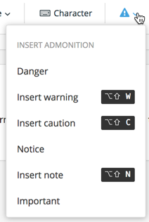

Notes, Warnings, and other Admonitions
Admonitions is the umbrella term used in Paligo for elements like notes, warnings, cautions, etc. And to create them is really easy.
Note
Note that the output of admonitions can be fully configured, if you need the icons to be different, not have any icons at all, and so on. The output in the default Paligo styling is just one example.
Do one of the following:
Either use the toolbar, under the Insert tab:
 Or the keyboard shortcuts, displayed next to the items on the toolbar menu.
Or use the full Element Context Menu, just like with any other element.
Select the type of admonition:
Note
This is a
noteelementThe
noteis normally a quite loosely used indicator of something you want to stand out.Important
This is an
importantelementThe
importantelement can be used also quite loosely for more emphasis.Notice
This is a
noticeelementThe
noticeelement can be used how ever you need, but has a certain significance in some industry standards.Caution
This is a
cautionelementThe
cautionelement can be used how ever you need, but has a certain significance in some industry standards.Warning
This is a
warningelementThe
warningelement can be used how ever you need, but has a certain significance in some industry standards.Danger
This is a
dangerelementThe
dangerelement can be used how ever you need, but has a certain significance in some industry standards.Tip
This is a
tipelementThe
tipelement is just what it sounds like, usually of lesser significance than anote.